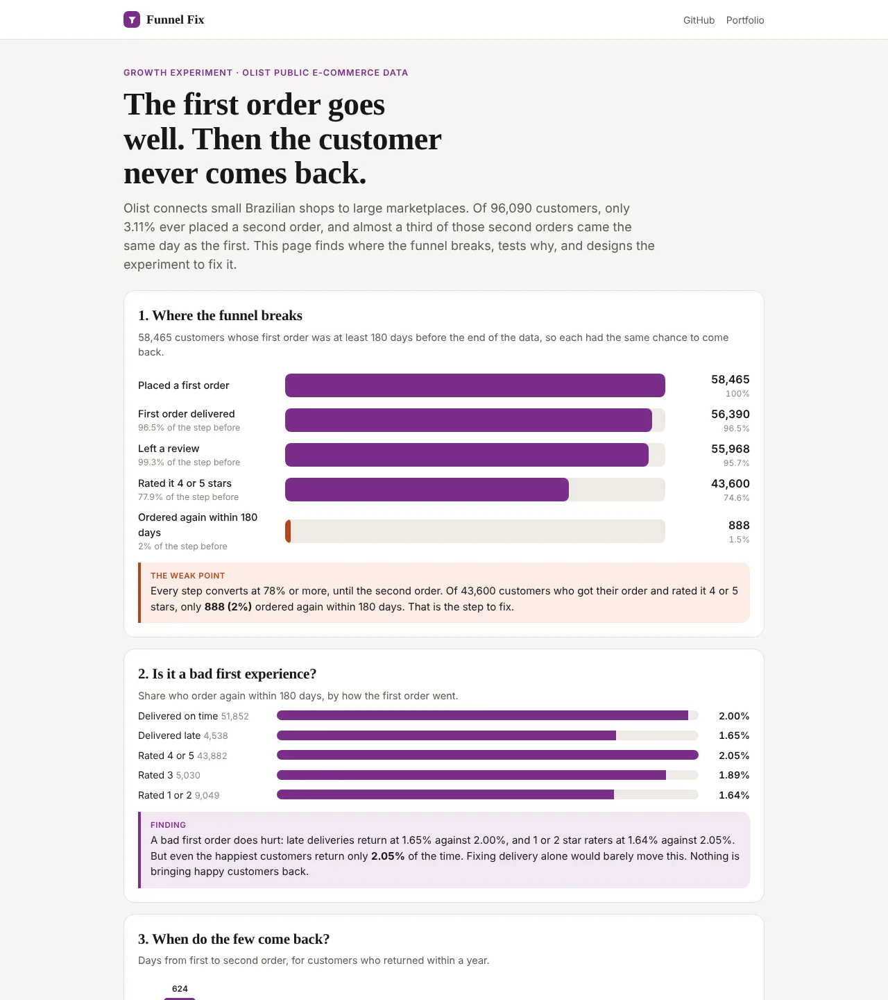

The problem
Olist customers who leave a good review rarely order again. I wanted to know how rare, for whom, and which experiment would be worth running.

What it does
- Repeat purchase funnel from first order to second within 180 days.
- Segments by delivery, review and category.
- Time to return histogram.
- Experiment spec and calculator with offer economics.
Findings and decisions
Confirmed in the data
Happy customers rarely come back
Of 43,600 customers with a good review, 888 (2.0%) ordered again within 180 days. 30% of second orders came the same day as the first.
Confirmed in the data
The test needs months, not weeks
With 4,765 eligible customers a month and a 1.37% baseline, detecting a 50% lift needs 11,260 customers, about 5.4 months.
Hypothesis
Free shipping is too expensive as the offer
With a median freight of 17.19 BRL on a median 86.57 BRL order, free shipping needs a 59% margin to break even. A smaller, targeted incentive is the better first test.
What I would do next
- Run the experiment design past a finance partner.
- Test a cheaper incentive first.
- Add a holdout to measure long-term effect.